Identita domu
Nárožní dvoupodlažní dům ČSA × R. Luxemburkové (plán cp_699_001: „699/3“, 770 vlevo, R. Luxemburkové vpravo). Foto cp_699_001 (nároží, obchod POTRAVINY, 3 osy do ČSA), cp_699_002 (z Luxemburkové, 5 os), cp_699_003, cp_699,770_002.
Použité prameny: cp_699_001 PLANE; cp_699_001..003, cp_699,770_001/002 PHOTO.
GIS: GIS id 1514 (165 m², obdélník). V oblasti „Cs_Armady“ je dům veden podruhé se stejnými přílohami.
Prameny (11 příloh)
Všechny přílohy domu v databázi Libuše, každá otevřená a zapsaná v plan_search.json. Stav rešerše plánů: found; situační/střešní náčrt (ruční, nekótovaný, PLANE,BW) – není stavební výkres; půdorysné rozměry z GIS nebo odhad. Kliknutím otevřete větší náhled.

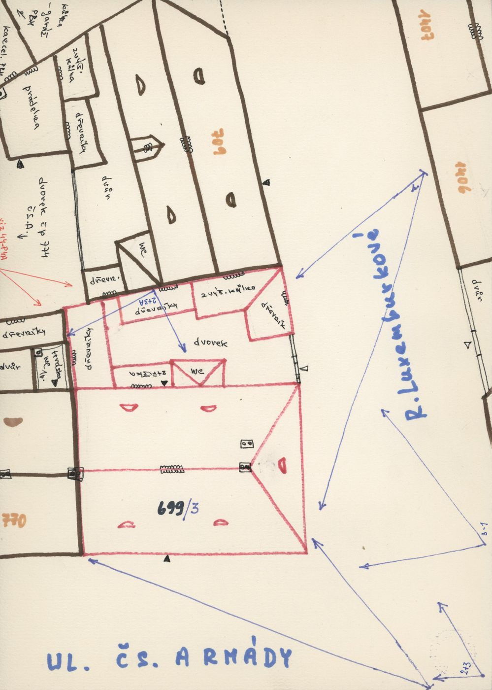
situační náčrt
SHA-256 381998ef8ced…

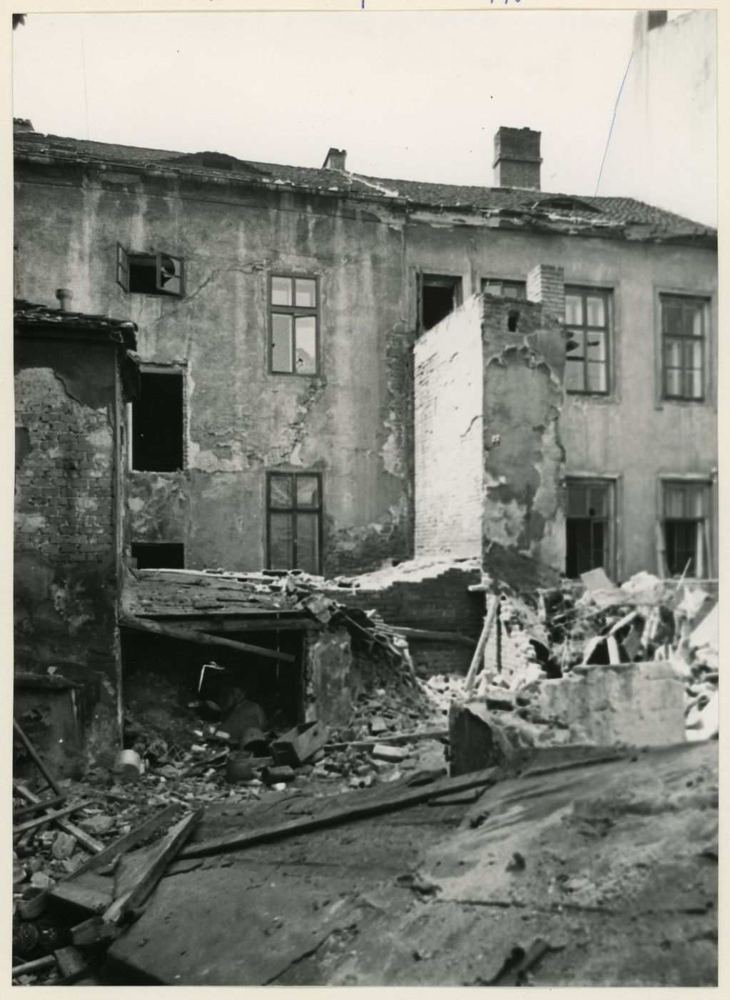
fotografie
SHA-256 42a5011c2ab6…

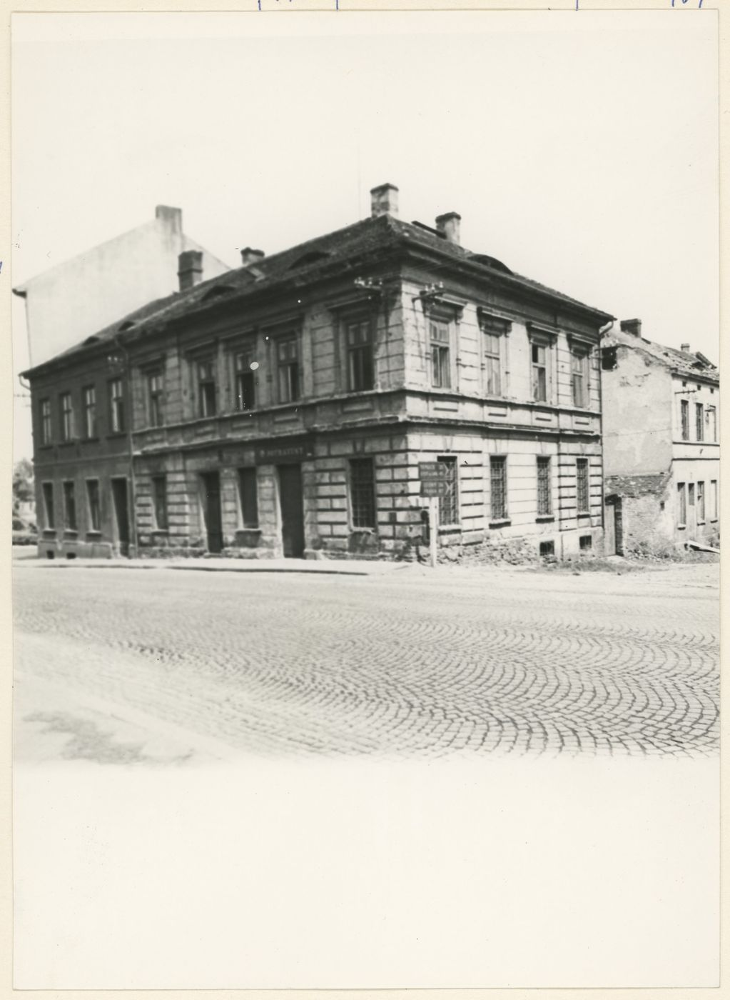
fotografie
SHA-256 b1124e071010…

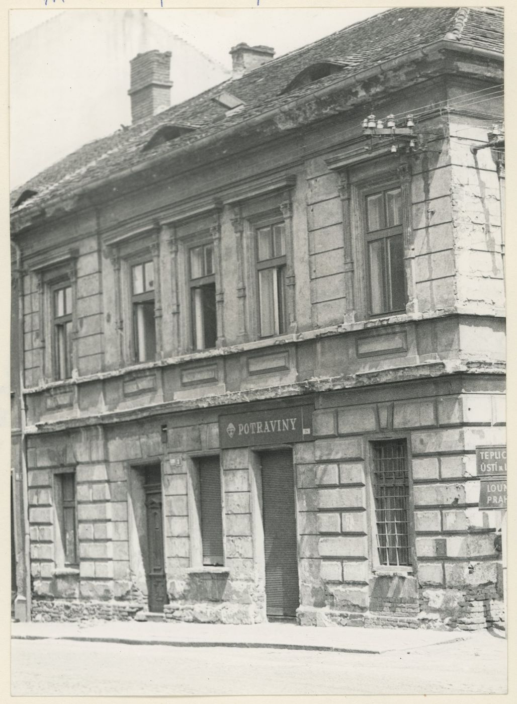
fotografie
SHA-256 aa34ebfc72db…

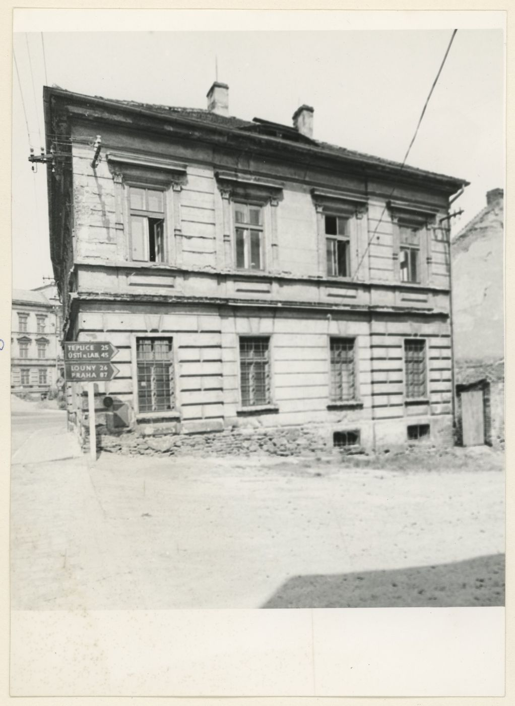
fotografie
SHA-256 cd0837250c9f…

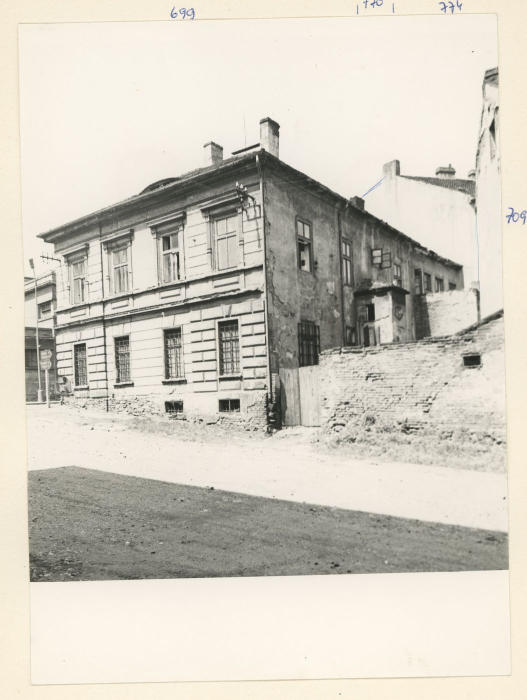
fotografie
SHA-256 2c9d181e11a0…

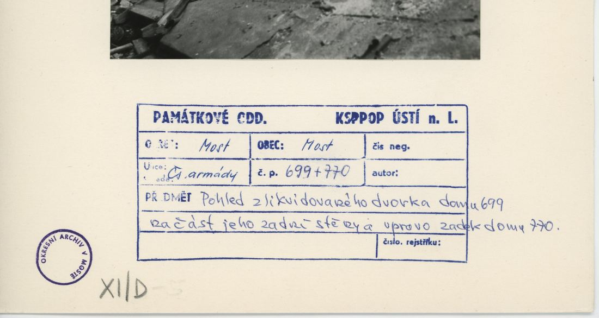
archivní karta (rub) · výřez textu
SHA-256 1f254bfcd3de…

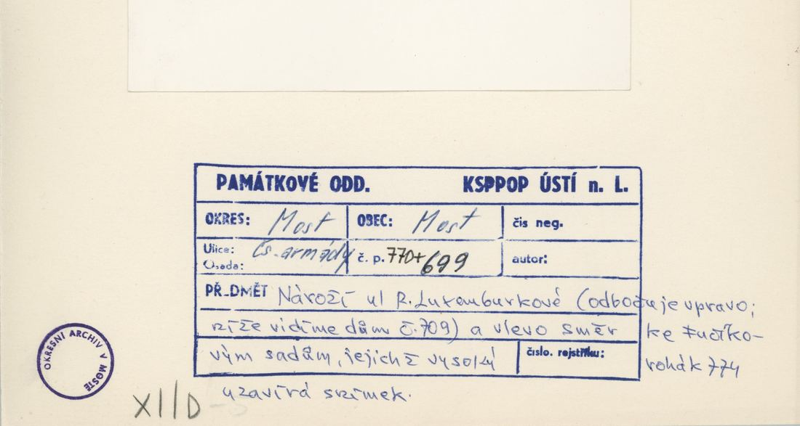
archivní karta (rub) · výřez textu
SHA-256 d9cf37ed2d25…

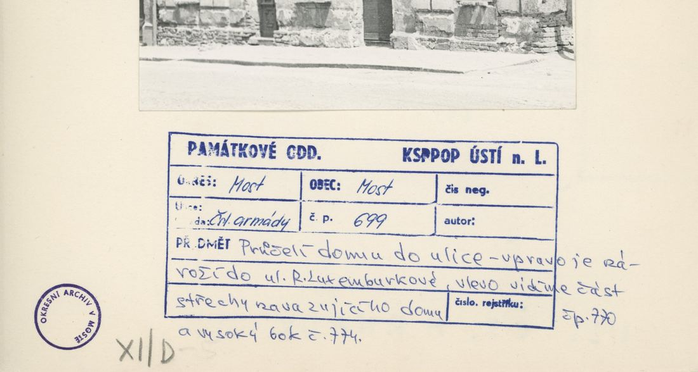
archivní karta (rub) · výřez textu
SHA-256 d4418d45da12…

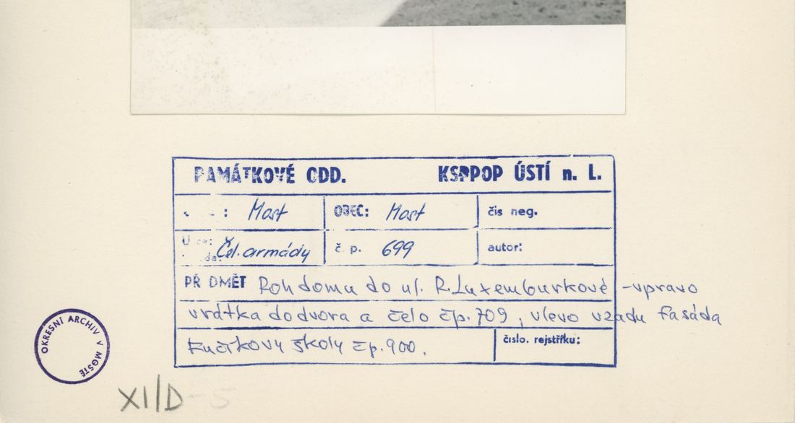
archivní karta (rub) · výřez textu
SHA-256 bdf7a285bc20…

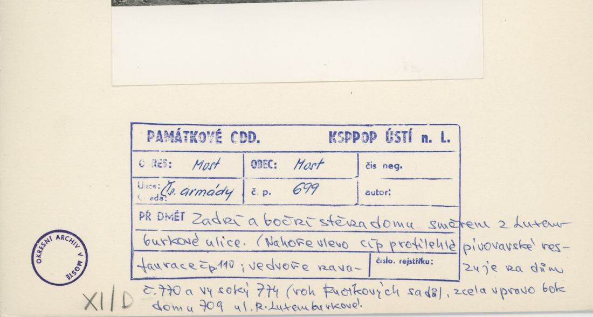
archivní karta (rub) · výřez textu
SHA-256 daaa9c16017c…
Model
| Revize modelu | r4 (zachované revize: r1, r2, r4) |
|---|---|
| Poloha | GIS půdorys id 1514 |
| Šířka průčelí | 12,49 m |
| Výška okapu | 7,50 m (odhad) |
| Podlaží | 2 |
| Střecha podle pramenů | valba |
| Střecha v modelu | valbová / sedlová (hřeben, valby, štíty) |
| Otvory | 18 |
| Vikýře / vedlejší hmoty | 2 / 0 |
| Polygonů | 312 |
Zdroje rozměrů, jak jsou zapsány v plánu modelu
| Rozměry | GIS id 1514 rectangle 12.49 x 13.21 m |
|---|---|
| Průčelí | photos cp_699_001 (corner, shop), cp_699_002 (Luxemburkove side 5 axes), cp_699,770_002 |
| Střecha | hip to the corner, gable to 770 (sketch: ridge along CSA, eyebrow dormers) |
Kontrola r4: brána geometrie a 19 pohledů
Automatická brána (uzavřené podkroví, krytí střechou, UV, síť, počty otvorů proti fotografii s rámečkem) a 19 renderů: čtyři osy, čtyři šikmé pohledy na střechu, dva detaily průčelí, dva pohledy pod přední okap, pohled shora a šest pohledů bez barev materiálů. Stav: prošla.
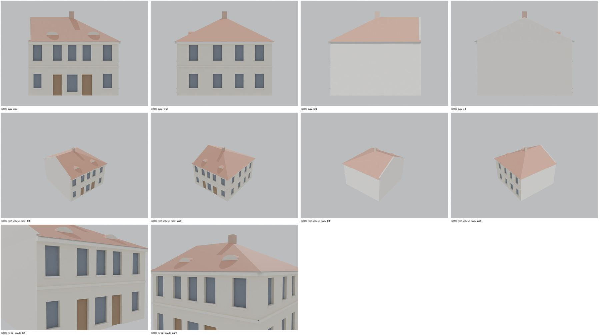
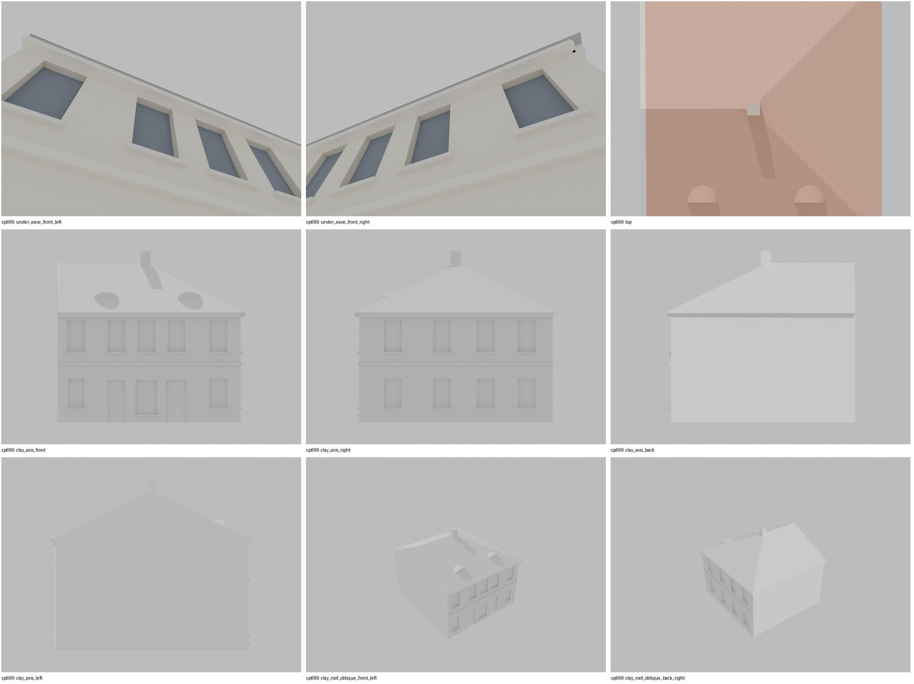
Nálezy a opravy
- průčelí 5 os s domovními dveřmi a obchodem, nárožní strana 4 osy
- štít u společné zdi s 770, valba na nároží
- komín končil pod hřebenem a nebyl vidět – zvýšen na hřeben + 0,8 m, nutná přestavba
- po přestavbě 25. 10.: komín nad hřebenem viditelný; ostatní pohledy beze změny
Revize r4: doklad fasád a změny
Okna a dveře se počítají na fotografii s červeným rámečkem po dělicích zdech domu. Řádky oken jsou zdola nahoru; „hypotéza“ jsou otvory, které na snímku vidět nejsou.
| Fasáda | Okna po podlažích | Hypotéza (id otvorů) | Poznámka |
|---|---|---|---|
| main | 3 / 5 + dveře 2 | – | přízemí: okno, domovní dveře, výkladec, dveře obchodu, okno s mříží; patro 5 oken |
| right | 4 / 4 | – | nárožní strana 4 + 4 okna |

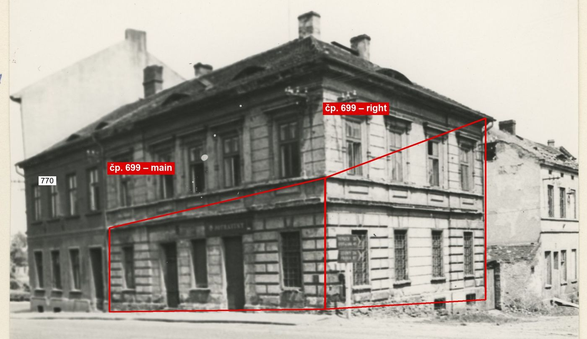
cp_699,770_002 (nároží): delší průčelí do Žatecké (navazuje na 770) 5 os – patro 5 oken, přízemí okno, domovní dveře, výkladec, dveře obchodu (POTRAVINY), okno s mříží; kratší nárožní strana do příčné ulice 4 osy (4 + 4 okna, mříže v přízemí, směrové tabule na nároží). Polohy os z 1D projektivního převodu (poměr výšek levého a pravého konce 0,746). r2 mělo průčelí 3 osy a nárožní stranu 5 os s obchodem.

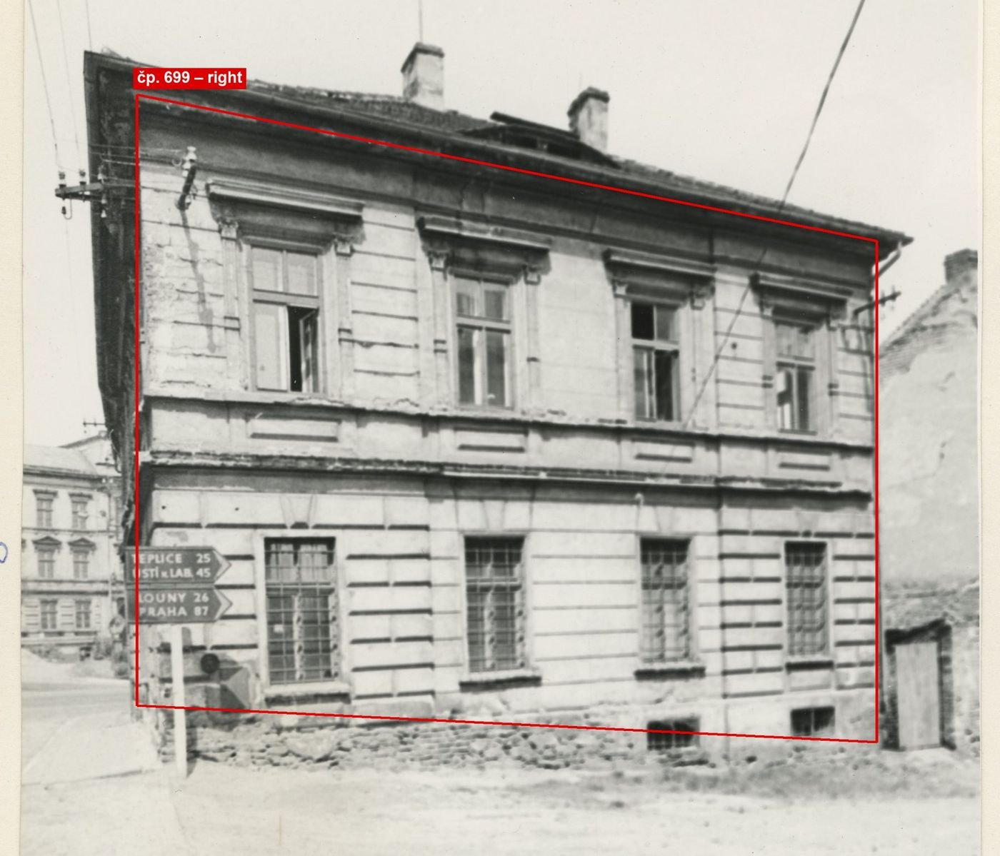
cp_699_002: čelní pohled na nárožní stranu (směrové tabule TEPLICE/ÚSTÍ/LOUNY/PRAHA na předním nároží), 4 osy v obou podlažích, v přízemí mříže; polohy os z 1D projektivního převodu (poměr výšek konců 0,82): 2,3 / 5,65 / 8,65 / 11,45 m.
Změny proti r2/r3
- closed attic, eave closures, gables along the roof underside, flat-roof covering slab, names for tools/most_qa (z4_post.py)
- gate pass 2: gable end(s) follow the shared wall line of the footprint, no verge overhang at the party wall: left = party wall with 770
- facade evidence (framed photos cp_699,770_002, cp_699_001, cp_699_002): Zatecka front 5 axes with house door and shop (POTRAVINY), corner side 4 axes with grilled ground windows; r2 had the front with 3 axes and the shop on the corner side with 5 axes
- visual QA: 1 chimney(s) ended below the ridge and were hidden in the roof; raised to ridge + 0.8 m (photos show the chimneys above the roof; height = hypothesis)
Hypotézy
Vše níže je model_hypothesis, provisional, locked: false.
- výšky odhad (4,0/3,6)
- obchodní výklady zjednodušeny na niky
- shop windows simplified to niches
- all storey heights, opening sizes and roof pitches are estimates from photographs (model_hypothesis, provisional, locked=false)
Soubory
- Model čp. 699, GLB
- Pracovní složka: F:\MOST\output\zatecka_street_claude_2026-10-17\houses\cp699\
plan_search.json,geometry_plan.json,README.md,texture_handoff_spec.json,r4/cp_699_G_r4.blend,r4/qa/qa_review.json, rámečkyframes/cp699_*